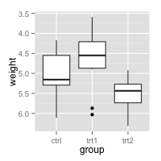
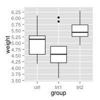
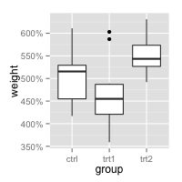

Axes (ggplot2)
This page was recently updated to reflect changes in the new version of ggplot2, 0.9.3. See Installing and using packages to make sure you have the latest version of ggplot2.
Problem
You want to change the order or direction of the axes.
Solution
Note: In the examples below, where it says something like scale_y_continuous, scale_x_continuous, or ylim, the y can be replaced with x if you want to operate on the other axis.
This is the basic boxplot that we will work with, using the built-in PlantGrowth data set.
library(ggplot2) bp <- ggplot(PlantGrowth, aes(x=group, y=weight)) + geom_boxplot() bp
Swapping X and Y axes
Swap x and y axes (make x vertical, y horizontal):
bp + coord_flip()
Discrete axis
Changing the order of items
# Manually set the order of a discrete-valued axis bp + scale_x_discrete(limits=c("trt1","trt2","ctrl")) # Reverse the order of a discrete-valued axis # Get the levels of the factor flevels <- levels(PlantGrowth$group) # "ctrl" "trt1" "trt2" # Reverse the order flevels <- rev(flevels) # "trt2" "trt1" "ctrl" bp + scale_x_discrete(limits=flevels) # Or it can be done in one line: bp + scale_x_discrete(limits = rev(levels(PlantGrowth$group)) )
Setting tick mark labels
For discrete variables, the tick mark labels are taken directly from levels of the factor. However, sometimes the factor levels have short names that aren't suitable for presentation.
bp + scale_x_discrete(breaks=c("ctrl", "trt1", "trt2"), labels=c("Control", "Treat 1", "Treat 2"))
# Hide x tick marks, labels, and grid lines bp + scale_x_discrete(breaks=NULL) # Hide all tick marks and labels (on X axis), but keep the gridlines bp + theme(axis.ticks = element_blank(), axis.text.x = element_blank())
Continuous axis
Setting range and reversing direction of an axis
Note that if any scale_y_continuous command is used, it overrides any ylim command, and the ylim will be ignored.
# Set the range of a continuous-valued axis # These are equivalent bp + ylim(0,8) bp + scale_y_continuous(limits=c(0,8))
If the y range is reduced using the method above, the data outside the range is ignored. This might be OK for a scatterplot, but it can be problematic for the box plots used here. For bar graphs, if the range does not include 0, the bars will not show at all!
To avoid this problem, you can use coord_cartesian instead. Instead of setting the limits of the data, it sets the viewing area of the data.
# These two do the same thing; all data points outside the graphing range are dropped, # resulting in a misleading box plot bp + ylim(5, 7.5) bp + scale_y_continuous(limits=c(5, 7.5)) # Using coord_cartesian "zooms" into the area bp + coord_cartesian(ylim=c(5, 7.5)) # Specify tick marks directly bp + coord_cartesian(ylim=c(5, 7.5)) + scale_y_continuous(breaks=seq(0, 10, 0.25)) # Ticks from 0-10, every .25
Reversing the direction of an axis
# Reverse order of a continuous-valued axis bp + scale_y_reverse()

Setting and hiding tick markers
# Setting the tick marks on an axis # This will show tick marks on every 0.25 from 1 to 10 # The scale will show only the ones that are within range (3.50-6.25 in this case) bp + scale_y_continuous(breaks=seq(1,10,1/4)) # The breaks can be spaced unevenly bp + scale_y_continuous(breaks=c(4, 4.25, 4.5, 5, 6,8)) # Suppress ticks and gridlines bp + scale_y_continuous(breaks=NULL) # Hide tick marks and labels (on Y axis), but keep the gridlines bp + theme(axis.ticks = element_blank(), axis.text.y = element_blank())

Axis transformations: log, sqrt, etc.
By default, the axes are linearly scaled. It is possible to transform the axes with log, power, roots, and so on.
There are two ways of transforming an axis. One is to use a scale transform, and the other is to use a coordinate transform. With a scale transform, the data is transformed before properties such as breaks (the tick locations) and range of the axis are decided. With a coordinate transform, the transformation happens after the breaks and scale range are decided. This results in different appearances, as shown below.
# Create some noisy exponentially-distributed data set.seed(201) n <- 100 dat <- data.frame(xval = (1:n+rnorm(n,sd=5))/20, yval = 2*2^((1:n+rnorm(n,sd=5))/20)) # A scatterplot with regular (linear) axis scaling sp <- ggplot(dat, aes(xval, yval)) + geom_point() sp # log2 scaling of the y axis (with visually-equal spacing) library(scales) # Need the scales package sp + scale_y_continuous(trans=log2_trans()) # log2 coordinate transformation (with visually-diminishing spacing) sp + coord_trans(y="log2")
With a scale transformation, you can also set the axis tick marks to show exponents.
sp + scale_y_continuous(trans = log2_trans(), breaks = trans_breaks("log2", function(x) 2^x), labels = trans_format("log2", math_format(2^.x)))
Many transformations are available. See ?trans_new for a full list. If the transformation you need isn't on the list, it is possible to write your own transformation function.
A couple scale transformations have convenience functions: scale_y_log10 and scale_y_sqrt (with corresponding versions for x).
set.seed(205) n <- 100 dat10 <- data.frame(xval = (1:n+rnorm(n,sd=5))/20, yval = 10*10^((1:n+rnorm(n,sd=5))/20)) sp10 <- ggplot(dat10, aes(xval, yval)) + geom_point() # log10 sp10 + scale_y_log10() # log10 with exponents on tick labels sp10 + scale_y_log10(breaks = trans_breaks("log10", function(x) 10^x), labels = trans_format("log10", math_format(10^.x)))
Fixed ratio between x and y axes
It is possible to set the scaling of the axes to an equal ratio, with one visual unit being representing the same numeric unit on both axes. It is also possible to set them to ratios other than 1:1.
# Data where x ranges from 0-10, y ranges from 0-30 set.seed(202) dat <- data.frame(xval = runif(40,0,10), yval = runif(40,0,30)) sp <- ggplot(dat, aes(xval, yval)) + geom_point() # Force equal scaling sp + coord_fixed() # Equal scaling, with each 1 on the x axis the same length as y on x axis sp + coord_fixed(ratio=1/3)
Axis labels and text formatting
To set and hide the axis labels:
bp + theme(axis.title.x = element_blank()) + # Remove x-axis label ylab("Weight (Kg)") # Set y-axis label # Also possible to set the axis label with the scale # Note that vertical space is still reserved for x's label bp + scale_x_discrete(name="") + scale_y_continuous(name="Weight (Kg)")
To change the fonts, and rotate tick mark labels:
# Change font options: # X-axis label: bold, red, and 20 points # X-axis tick marks: rotate 90 degrees CCW, move to the left a bit (using vjust, # since the labels are rotated), and 16 points bp + theme(axis.title.x = element_text(face="bold", colour="#990000", size=20), axis.text.x = element_text(angle=90, vjust=0.5, size=16))
Tick mark label text formatters
You may want to display your values as percents, or dollars, or in scientific notation. To do this you can use a formatter, which is a function that changes the text:
# Label formatters library(scales) # Need the scales package bp + scale_y_continuous(labels=percent) + scale_x_discrete(labels=abbreviate) # In this particular case, it has no effect

Other useful formatters for continuous scales include comma, percent, dollar, and scientific. For discrete scales, abbreviate will remove vowels and spaces and shorten to four characters. For dates, use date_format.
Sometimes you may need to create your own formatting function. This one will display numeric minutes in HH:MM:SS format.
# Self-defined formatting function for times. timeHMS_formatter <- function(x) { h <- floor(x/60) m <- floor(x %% 60) s <- round(60*(x %% 1)) # Round to nearest second lab <- sprintf('%02d:%02d:%02d', h, m, s) # Format the strings as HH:MM:SS lab <- gsub('^00:', '', lab) # Remove leading 00: if present lab <- gsub('^0', '', lab) # Remove leading 0 if present } bp + scale_y_continuous(label=timeHMS_formatter)
Hiding gridlines
To hide all gridlines, both vertical and horizontal:
# Hide all the gridlines bp + theme(panel.grid.minor=element_blank(), panel.grid.major=element_blank()) # Hide just the minor gridlines bp + theme(panel.grid.minor=element_blank())
It's also possible to hide just the vertical or horizontal gridlines:
# Hide all the horizontal gridlines bp + theme(panel.grid.minor.x=element_blank(), panel.grid.major.x=element_blank()) # Hide all the vertical gridlines bp + theme(panel.grid.minor.y=element_blank(), panel.grid.major.y=element_blank())
Hiding only horizontal or vertical gridlines (old)
This is needed only for versions of ggplot2 before 0.9.2. In 0.9.2, it is much easier to control horizontal and vertical gridlines separately (see previous).
Hiding just the vertical or horizontal gridlines with ggplot2 requires a bit of a hack. An internal function called guide_grid must be redefined to not draw the vertical or horizontal grid lines.
# Save the original definition of the guide_grid guide_grid_orig <- ggplot2:::guide_grid # Create the replacement function guide_grid_no_vline <- function(theme, x.minor, x.major, y.minor, y.major) { x.minor <- setdiff(x.minor, x.major) y.minor <- setdiff(y.minor, y.major) ggname("grill", grobTree( theme_render(theme, "panel.background"), if(length(y.minor) > 0) theme_render( theme, "panel.grid.minor", name = "y", x = rep(0:1, length(y.minor)), y = rep(y.minor, each=2), id.lengths = rep(2, length(y.minor)) ), if(length(y.major) > 0) theme_render( theme, "panel.grid.major", name = "y", x = rep(0:1, length(y.major)), y = rep(y.major, each=2), id.lengths = rep(2, length(y.major)) ) )) } # Set the environment to be the same as original environment(guide_grid_no_vline) <- environment(ggplot2:::guide_grid) # Assign the function inside ggplot2 assignInNamespace("guide_grid", guide_grid_no_vline, ns="ggplot2") # Draw the graph bp # Restore the original guide_grid function so that it will draw all gridlines again assignInNamespace("guide_grid", guide_grid_orig, ns="ggplot2")
This will hide vertical grid lines -- even if the x and y axes have been swapped with coord_flip(), it will still hide the vertical lines.
Unfortunately, the replacement guide_grid does not get stored as part of the definition of the plot -- the call to assignInNamespace() must be done just before outputting the plot. This can be annoying if you define the plots in one place and output them in another.
This will hide horizontal grid lines:
# Save the original definition of guide_grid guide_grid_orig <- ggplot2:::guide_grid # Create the replacement function guide_grid_no_hline <- function(theme, x.minor, x.major, y.minor, y.major) { x.minor <- setdiff(x.minor, x.major) y.minor <- setdiff(y.minor, y.major) ggname("grill", grobTree( theme_render(theme, "panel.background"), if(length(x.minor) > 0) theme_render( theme, "panel.grid.minor", name = "x", x = rep(x.minor, each=2), y = rep(0:1, length(x.minor)), id.lengths = rep(2, length(x.minor)) ), if(length(x.major) > 0) theme_render( theme, "panel.grid.major", name = "x", x = rep(x.major, each=2), y = rep(0:1, length(x.major)), id.lengths = rep(2, length(x.major)) ) )) } # Set the environment to be the same as original environment(guide_grid_no_hline) <- environment(ggplot2:::guide_grid) # Assign the function inside ggplot2 assignInNamespace("guide_grid", guide_grid_no_hline, ns="ggplot2") # Draw the graph bp # Restore the original guide_grid function so that it will draw all gridlines again assignInNamespace("guide_grid", guide_grid_orig, ns="ggplot2")